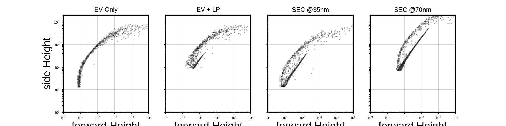
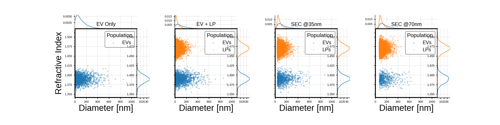

Note
Go to the end to download the full example code.
Example with SEC columns#
This example demonstrates how to simulate flow cytometry data for extracellular vesicles (EVs) and lipoproteins (LPs) under different Size Exclusion Chromatography (SEC) scenarios. The simulation includes the generation of scatterer populations, opto-electronic configurations, and digital processing to analyze the resulting data.


0 / 4
1 / 4
2 / 4
3 / 4
import numpy as np
import pandas as pd
from typing import Optional
from TypedUnit import ureg, AnyUnit
import seaborn as sns
import matplotlib.pyplot as plt
from MPSPlots.styles import scientific
from FlowCyPy import fluidics
from FlowCyPy import opto_electronics
from FlowCyPy import digital_processing
from FlowCyPy import FlowCytometer
import matplotlib.gridspec as gridspec
# ----------------------------
# Data geration flow cytometer
# ----------------------------
def run_sec_swarm_demo(
*,
minimum_diameter_after_sec: Optional[AnyUnit],
ev_spread: float,
lp_spread: float,
wavelength: float,
threshold: str,
trigger_channel: str,
saturation_levels,
ev_characteristic_diameter: AnyUnit,
lp_characteristic_diameter: AnyUnit,
lp_concentration: AnyUnit,
ev_concentration: AnyUnit,
lp_refractive_index_mean: AnyUnit,
lp_refractive_index_standard_deviation: AnyUnit,
ev_refractive_index_mean: AnyUnit,
ev_refractive_index_standard_deviation: AnyUnit,
gamma_monte_carlo_samples: int,
ev_maximum_diameter: Optional[AnyUnit],
lp_maximum_diameter: Optional[AnyUnit],
reduce_concentration_consistently: bool,
dilution_factor: float,
run_time: AnyUnit,
):
# 1. Fluidics Setup
# Configure the flow cell dimensions and sample/sheath flow rates.
flow_cell = fluidics.FlowCell(
sample_volume_flow=fluidics.SampleFlowRate.MEDIUM.value,
sheath_volume_flow=fluidics.SheathFlowRate.MEDIUM.value,
width=200 * ureg.micrometer, #can be changed to fit an experimental setup
height=100 * ureg.micrometer, #^^
perfectly_aligned=True
)
# Initialize a collection to hold different scatterer populations.
scatterer_collection = fluidics.ScattererCollection()
# Define the refractive index of the medium (e.g., water).
medium_refractive_index = fluidics.distributions.Delta(1.33 * ureg.RIU)
# 2. Lipoprotein (LP) Population Construction
# Define the diameter distribution for Lipoproteins using Rosin-Rammler model.
# Characterize the size uniformity and diameter spread of particles
lp_diameter_distribution = fluidics.distributions.RosinRammler(
scale=lp_characteristic_diameter,
shape=float(lp_spread),
low_cutoff=minimum_diameter_after_sec,
high_cutoff=lp_maximum_diameter,
)
# Define the refractive index distribution for Lipoproteins as a Normal distribution.
lp_refractive_index_distribution = fluidics.distributions.Normal(
mean=lp_refractive_index_mean, # Corrected to use LP_refractive_index_mean
standard_deviation=lp_refractive_index_standard_deviation,
low_cutoff=None, # can be used to not incude lp particles that would overlap with evs
high_cutoff=None #can be used if data generated gives few very high values which are not wanted
)
# Calculate the proportion of LPs that are kept within the defined cutoffs.
lp_kept_joint = lp_diameter_distribution.proportion_within_cutoffs() * lp_refractive_index_distribution.proportion_within_cutoffs()
# Create the LP population with its properties and sampling method.
lp_population = fluidics.populations.SpherePopulation(
name="LPs",
medium_refractive_index=medium_refractive_index,
concentration=lp_concentration * lp_kept_joint,
diameter=lp_diameter_distribution,
refractive_index=lp_refractive_index_distribution,
sampling_method=fluidics.populations.GammaModel(number_of_samples=gamma_monte_carlo_samples), # uses monte carlo sampling as decrease in runtime is more important than accuracy for lps
)
# 3. Extracellular Vesicle (EV) Population Construction
# Define the diameter distribution for Extracellular Vesicles using Rosin-Rammler model.
ev_diameter_distribution = fluidics.distributions.RosinRammler(
scale=ev_characteristic_diameter,
shape=float(ev_spread),
low_cutoff=minimum_diameter_after_sec,
high_cutoff=ev_maximum_diameter,
)
# Define the refractive index distribution for Extracellular Vesicles as a Normal distribution.
ev_refractive_index_distribution = fluidics.distributions.Normal(
mean=ev_refractive_index_mean,
standard_deviation=ev_refractive_index_standard_deviation,
low_cutoff=None, #can be used if data generated gives few very low values which are not wanted
high_cutoff=None # can be used to not include evs that would overlap with lps
)
# Calculate the proportion of EVs that are kept within the defined cutoffs.
ev_kept_joint = ev_diameter_distribution.proportion_within_cutoffs() * ev_refractive_index_distribution.proportion_within_cutoffs()
# Create the EV population with its properties and sampling method.
ev_population = fluidics.populations.SpherePopulation(
name="EVs",
medium_refractive_index=medium_refractive_index,
concentration=ev_concentration * ev_kept_joint,
diameter=ev_diameter_distribution,
refractive_index=ev_refractive_index_distribution,
sampling_method=fluidics.populations.ExplicitModel(), # uses explicit model to increase accuracy as there are fewer evs than lps
)
# Add populations to the scatterer collection if they exist and have non-zero concentration.
if ev_population is not None and ev_concentration != 0:
scatterer_collection.add_population(ev_population)
if lp_population is not None and lp_concentration != 0:
scatterer_collection.add_population(lp_population)
# Apply dilution to the scatterer collection if specified.
if dilution_factor != 1.0:
scatterer_collection.dilute(factor=float(dilution_factor))
# Instantiate the Fluidics module with the scatterer collection and flow cell.
_fluidics = fluidics.Fluidics(scatterer_collection=scatterer_collection, flow_cell=flow_cell)
# 4. Opto-Electronics Setup
# Configure the laser beam source with Gaussian properties.
beam = opto_electronics.source.Gaussian(
waist_z=10 * ureg.micrometer,
waist_y=60 * ureg.micrometer,
wavelength=wavelength,
optical_power=200 * ureg.milliwatt,
include_shot_noise=False #this is set to false to make sure the results are easy to interpret
)
# Configure the side scatter detector.
detector_side = opto_electronics.Detector(
name="side",
phi_angle=90 * ureg.degree,
numerical_aperture=0.9 * ureg.AU,
responsivity=10 * ureg.ampere / ureg.watt,
dark_current=20 * ureg.nanoampere
)
# Configure the forward scatter detector.
detector_forward = opto_electronics.Detector(
name="forward",
phi_angle=0 * ureg.degree,
numerical_aperture=0.2 * ureg.AU,
cache_numerical_aperture=0.08 * ureg.AU,
responsivity=10 * ureg.ampere / ureg.watt,
dark_current=20 * ureg.nanoampere
)
# Configure the amplifier for signal processing.
amplifier = opto_electronics.Amplifier(
gain=0.1 * ureg.volt / ureg.ampere, #can be ajusted if there is no difference between signal and background noise
bandwidth=10 * ureg.megahertz,
voltage_noise_density=0.00001 * ureg.nanovolt / ureg.sqrt_hertz,
)
# Configure the digitizer for converting analog signals to digital.
digitizer = opto_electronics.Digitizer(
bit_depth=20,
use_auto_range=True,
sampling_rate=30 * ureg.megahertz
)
# Define analog processing filters.
analog_processing = [
opto_electronics.circuits.BesselLowPass(cutoff_frequency=2 * ureg.megahertz, order=4, gain=2),
]
# Instantiate the OptoElectronics module with detectors, source, amplifier, digitizer, and analog processing.
_opto_electronics = opto_electronics.OptoElectronics(
detectors=[detector_side, detector_forward],
source=beam,
amplifier=amplifier,
digitizer=digitizer,
analog_processing=analog_processing
)
# 5. Digital Processing Setup
# Configure the discriminator for event detection based on a trigger channel and threshold.
discri = digital_processing.discriminator.DynamicWindow(
trigger_channel=trigger_channel,
threshold=threshold,
pre_buffer=20,
post_buffer=20,
max_triggers=-1,
)
# Configure the peak finding algorithm.
peak_algo = digital_processing.peak_locator.GlobalPeakLocator(compute_width=False)
# Instantiate the DigitalProcessing module with the discriminator and peak algorithm.
_digital_processing = digital_processing.DigitalProcessing(
discriminator=discri,
peak_algorithm=peak_algo,
)
# 6. Flow Cytometer Run
# Instantiate the FlowCytometer with the fluidics and background power.
cytometer = FlowCytometer(
fluidics=_fluidics,
background_power=0.00001 * ureg.milliwatt,
)
# Run the simulation, combining opto-electronics, run time, and digital processing.
run_record = cytometer.run(
opto_electronics=_opto_electronics,
run_time=run_time,
digital_processing=_digital_processing,
)
# Return the record of the simulation run.
return run_record
#---------------------------------
# Generate the populations
#---------------------------------
# Define arrays for the simulation parameters that will change across runs.
# These values correspond to the different SEC (Size Exclusion Chromatography) scenarios:
# 0 nm: EV Only, EV + LP
# 35 nm: SEC @35nm
# 70 nm: SEC @70nm
sec_values = [0, 0, 35, 70] * ureg.nanometer
ev_concentrations = [5e15, 5e15, 5e15, 5e15] * ureg.particle / ureg.milliliter
lp_concentrations = [0, 5e16, 5e16, 5e16] * ureg.particle / ureg.milliliter
# List to store the results (run_record) from each simulation run.
run_records = []
# Loop through the defined SEC scenarios to run the simulation for each.
# 'sec' represents the minimum diameter after SEC, 'lp_concentration' and 'ev_concentration'
# are adjusted for each specific scenario.
for index, (sec, lp_concentration, ev_concentration) in enumerate(zip(sec_values, lp_concentrations, ev_concentrations)):
# Print current progress to track the simulation runs.
print(f"{index} / {len(sec_values)}")
# Initialize current_lp_min_ri for potential future refractive index cutoffs.
current_lp_min_ri = None
# Run the flow cytometer simulation with specific parameters for the current scenario.
run_record = run_sec_swarm_demo(
wavelength=488 * ureg.nanometer, # Laser wavelength
trigger_channel='side', # Detector channel used for triggering events
minimum_diameter_after_sec=sec, # SEC cutoff diameter for particles
ev_maximum_diameter=1000 * ureg.nanometer, # Maximum EV diameter for sampling
lp_maximum_diameter=1000 * ureg.nanometer, # Maximum LP diameter for sampling
ev_spread=1.1, # Rosin-Rammler spread parameter for EVs
lp_spread=0.9, # Rosin-Rammler spread parameter for LPs
ev_characteristic_diameter=120 * ureg.nanometer, # Characteristic diameter for EVs
lp_characteristic_diameter=40 * ureg.nanometer, # Characteristic diameter for LPs
lp_concentration=lp_concentration, # Lipoprotein concentration for current run
ev_concentration=ev_concentration, # Extracellular Vesicle concentration for current run
dilution_factor=30_000_000, # Dilution factor applied to the sample
threshold='5sigma', # Trigger threshold based on noise standard deviation
gamma_monte_carlo_samples=5_000, # Number of Monte Carlo samples for gamma model
lp_refractive_index_mean=1.47 * ureg.RIU, # Mean refractive index for LPs
lp_refractive_index_standard_deviation=0.01 * ureg.RIU, # Std dev of refractive index for LPs
ev_refractive_index_mean=1.39 * ureg.RIU, # Mean refractive index for EVs
ev_refractive_index_standard_deviation=0.01 * ureg.RIU, # Std dev of refractive index for EVs
run_time=10 * ureg.millisecond, # Total simulation run time
saturation_levels=None, # No saturation levels applied in this simulation
reduce_concentration_consistently=True # Explicitly passing this as its default is now removed
)
# Add the run record (simulation results) to the list.
run_records.append(run_record)
# Define common variables
x_detector = "forward"
y_detector = "side"
titles_map = ['EV Only', 'EV + LP', 'SEC @35nm', 'SEC @70nm']
x_col = f"{x_detector} Height"
y_col = f"{y_detector} Height"
all_peaks_data = []
for i, record in enumerate(run_records):
peaks_data = record.peaks
title = titles_map[i]
if peaks_data is not None:
if (
x_detector in peaks_data.index.get_level_values(0) and
y_detector in peaks_data.index.get_level_values(0)
):
df_for_plot = pd.DataFrame({
x_col: np.asarray(peaks_data.loc[x_detector, "Height"], float),
y_col: np.asarray(peaks_data.loc[y_detector, "Height"], float)
}).dropna()
df_for_plot = df_for_plot[(df_for_plot[x_col] > 0) & (df_for_plot[y_col] > 0)]
sampled_df = df_for_plot
sampled_df['Run_Title'] = title
all_peaks_data.append(sampled_df)
else:
pass # peaks_data is None
if all_peaks_data:
combined_df = pd.concat(all_peaks_data, ignore_index=True)
else:
combined_df = pd.DataFrame() # Ensure combined_df is defined even if no peaks data
# Plotting part
with plt.style.context(scientific):
if not combined_df.empty:
fig = plt.figure(figsize=(20, 5)) # Adjust figure size for 1x4 grid
gs_main = gridspec.GridSpec(1, 4, figure=fig, wspace=0.2) # Main grid for the 4 scatter plots
for i, title in enumerate(titles_map):
ax_scatter = fig.add_subplot(gs_main[i]) # Main scatter plot
# Filter data for the current Run_Title
df_facet = combined_df[combined_df['Run_Title'] == title]
# Scatter plot
sns.scatterplot(
x=x_col,
y=y_col,
data=df_facet,
s=10, alpha=0.35, color="black", rasterized=True,
ax=ax_scatter
)
# Set titles and labels
ax_scatter.set_title(title, fontsize=18, pad=10)
ax_scatter.set_xlabel(x_col)
ax_scatter.set_ylabel(y_col)
# Set limits for scatter plot
ax_scatter.set_xlim(1, 100000)
ax_scatter.set_ylim(1, 20000)
# Set log scale for scatter plot
ax_scatter.set_xscale("log")
ax_scatter.set_yscale("log")
# Apply common axis formatting for scatter plot
ax_scatter.tick_params(
axis="both",
which="major",
bottom=True, top=False, left=True, right=False,
labelbottom=True, labelleft=True,
labelsize=10, length=4
)
ax_scatter.tick_params(
axis="both",
which="minor",
bottom=True, top=False, left=True, right=False,
length=2
)
ax_scatter.grid(True, which="major", alpha=0.25)
# Ensure x-axis labels only for the bottom plots, y-axis for the left-most plots
if i > 0: # All plots except the first one
ax_scatter.set_ylabel("")
ax_scatter.tick_params(axis="y", labelleft=False)
# Removed plt.tight_layout() to avoid UserWarning as gridspec handles spacing
plt.savefig(
'measurements_scatter.png', # New filename without marginals
dpi=300,
transparent=False,
bbox_inches="tight",
facecolor=(0, 0, 0, 0)
)
plt.show()
else:
print("No data to plot for measurements_scatter.png. 'peaks_data' was None for all runs, or no suitable event data was found.")
# --------------------------------
# plotting
# --------------------------------
titles_map = ['EV Only', 'EV + LP', 'SEC @35nm', 'SEC @70nm']
all_event_data = []
for i, record in enumerate(run_records):
df = record.event_collection.get_concatenated_dataframe().reset_index().rename(columns={'RefractiveIndex': 'Refractive Index'})
df['Run_Title'] = titles_map[i]
all_event_data.append(df)
combined_df = pd.concat(all_event_data, ignore_index=True)
min_expected_diameter_nm = 1.0
max_expected_diameter_nm = 1000.0
combined_df['Diameter_nm'] = combined_df['Diameter'].to('nanometer').magnitude
combined_df = combined_df[
(combined_df['Diameter_nm'] >= min_expected_diameter_nm) &
(combined_df['Diameter_nm'] <= max_expected_diameter_nm)
].copy()
with plt.style.context(scientific):
fig = plt.figure(figsize=(24, 6)) # Adjusted figure size for 1x4 grid to be more square
gs_main = gridspec.GridSpec(1, 4, figure=fig, wspace=0.15, hspace=0.15)
for i, title in enumerate(titles_map):
gs_inner = gridspec.GridSpecFromSubplotSpec(3, 3, subplot_spec=gs_main[i],
width_ratios=[0.2, 1, 0.2],
height_ratios=[0.2, 1, 0.2],
wspace=0.0, hspace=0.0)
ax_hist_x = fig.add_subplot(gs_inner[0, 1])
ax_scatter = fig.add_subplot(gs_inner[1, 1])
ax_hist_y = fig.add_subplot(gs_inner[1, 2])
df_facet = combined_df[combined_df['Run_Title'] == title]
populations = df_facet['Population'].unique()
colors = sns.color_palette(n_colors=len(populations))
for pop_idx, population in enumerate(populations):
df_pop = df_facet[df_facet['Population'] == population]
current_color = colors[pop_idx]
sns.scatterplot(
x="Diameter_nm",
y="Refractive Index",
data=df_pop,
s=15, alpha=0.35, rasterized=True, edgecolor=None,
ax=ax_scatter,
color=current_color,
label=population
)
sns.kdeplot(
x=df_pop["Diameter_nm"],
ax=ax_hist_x,
color=current_color,
linewidth=1.5,
)
sns.kdeplot(
y=df_pop["Refractive Index"],
ax=ax_hist_y,
color=current_color,
linewidth=1.5,
)
ax_scatter.set_title(title, fontsize=18, pad=10)
ax_scatter.set_xlabel("Diameter [nm]")
ax_scatter.set_ylabel("Refractive Index")
ax_scatter.set_xlim(0.0, max_expected_diameter_nm * 1.1)
ax_hist_x.set_xlim(ax_scatter.get_xlim())
ax_scatter.set_ylim(combined_df['Refractive Index'].min() * 0.99, combined_df['Refractive Index'].max() * 1.01)
ax_hist_y.set_ylim(ax_scatter.get_ylim())
ax_scatter.set_xscale("linear")
ax_hist_x.set_xscale("linear")
ax_hist_x.set_ylabel("")
ax_hist_x.set_xlabel("")
ax_hist_x.tick_params(axis="x", labelbottom=False)
ax_hist_x.tick_params(axis="y", labelleft=False)
ax_hist_y.set_ylabel("")
ax_hist_y.set_xlabel("")
ax_hist_y.tick_params(axis="x", labelbottom=False)
ax_hist_y.tick_params(axis="y", labelleft=False)
for ax in [ax_scatter, ax_hist_x, ax_hist_y]:
ax.tick_params(
axis="both",
which="major",
bottom=True, top=False, left=True, right=False,
labelbottom=True, labelleft=True,
labelsize=10, length=4
)
ax.tick_params(
axis="both",
which="minor",
bottom=True, top=False, left=True, right=False,
length=2
)
ax.grid(True, which="major", alpha=0.25)
ax_hist_x.spines[['top', 'right', 'left', 'bottom']].set_visible(False)
ax_hist_y.spines[['top', 'right', 'left', 'bottom']].set_visible(False)
if i > 0:
ax_scatter.set_ylabel("")
ax_scatter.tick_params(axis="y", labelleft=False)
ax_scatter.legend(title="Population", loc='upper right')
plt.savefig(
'scatterers_with_marginals.png',
dpi=300,
transparent=False,
bbox_inches="tight",
facecolor=(0, 0, 0, 0)
)
plt.show()
Total running time of the script: (1 minutes 15.203 seconds)